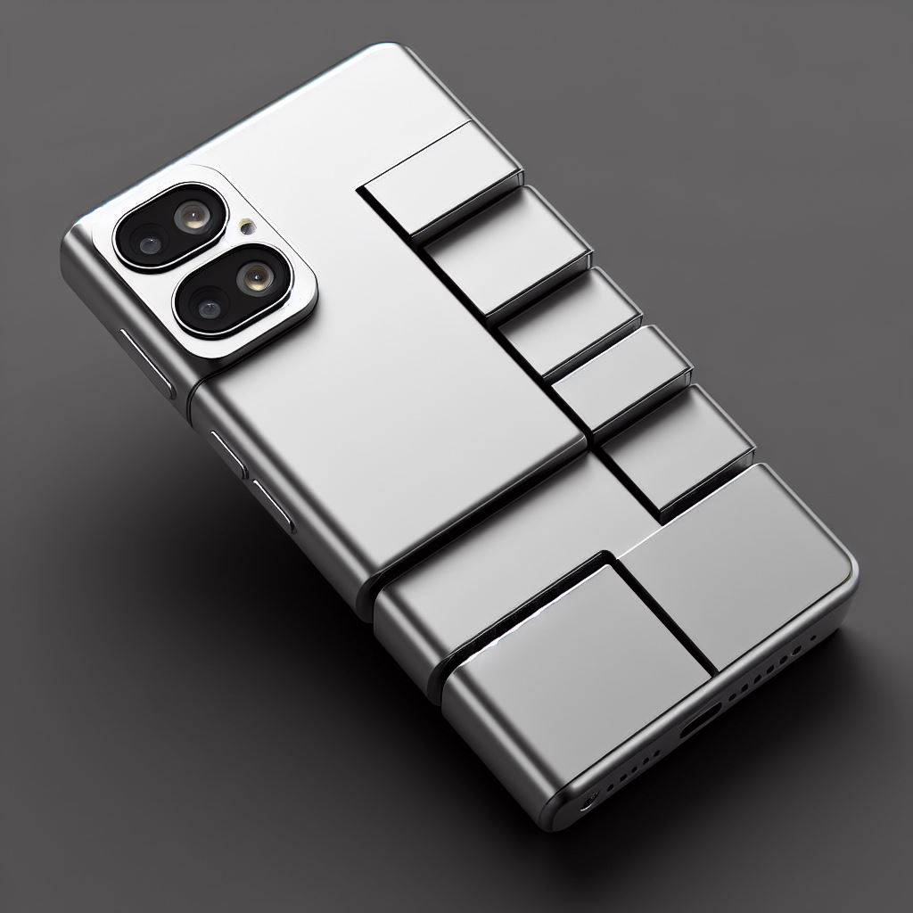

Bienvenidos a tu Tienda Virtual Fruit
Lo mas destacado:
FruitBerryX
El FruitBerryX es el último smartphone de Fruit, con una pantalla vibrante Super Retina HD y un potente procesador A15 Bionic-Micro para un rendimiento fluido. Su cámara dual de alta resolución captura fotos impresionantes y su diseño elegante lo hace ideal para cualquier estilo de vida.
FruitSizzlePro
El FruitSizzlePro presenta un potente procesador Fruit A15 Bionic para un rendimiento excepcional, una pantalla Super Retina XDR-300 para una visualización impresionante y una configuración de cámara triple de alta calidad que incluye un sensor principal de alta resolución, un ultra gran angular y un teleobjetivo. Con una batería de larga duración y carga rápida, es el teléfono ideal para quienes buscan lo último en tecnología móvil.